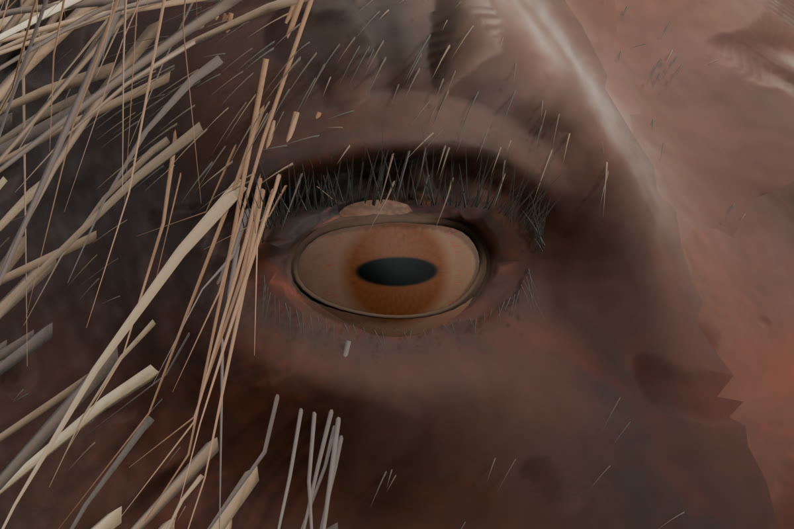
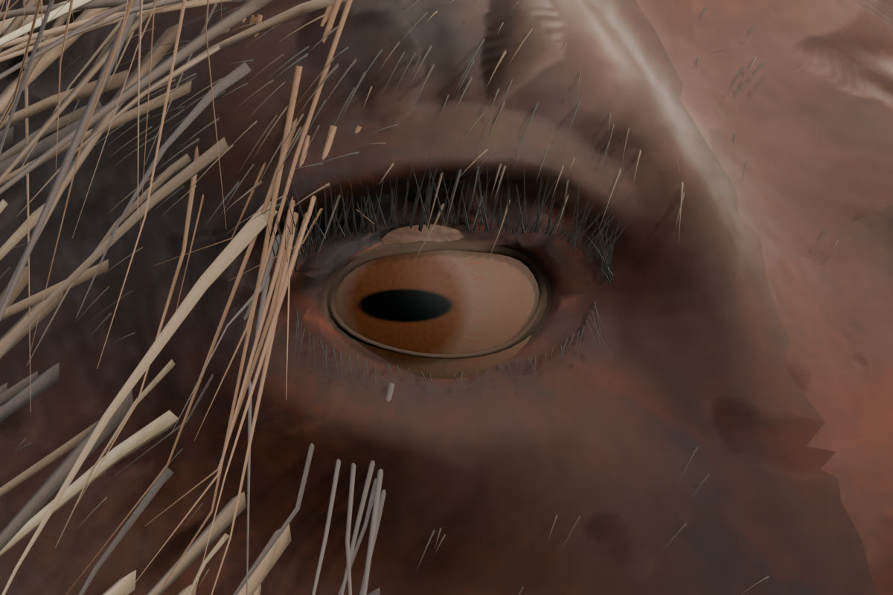
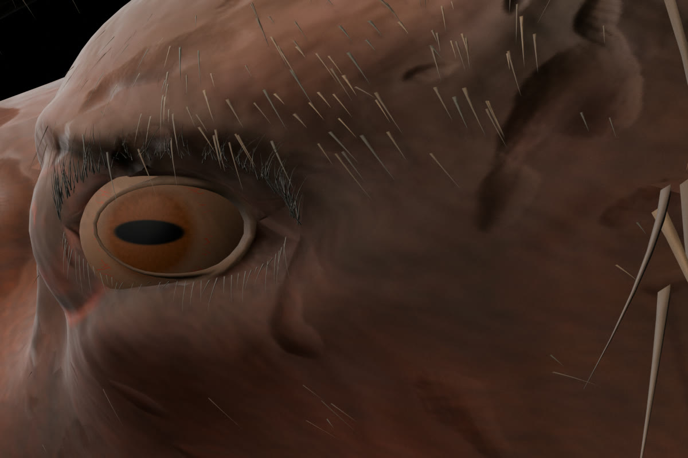
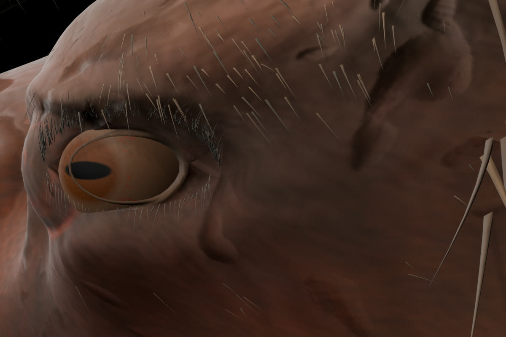
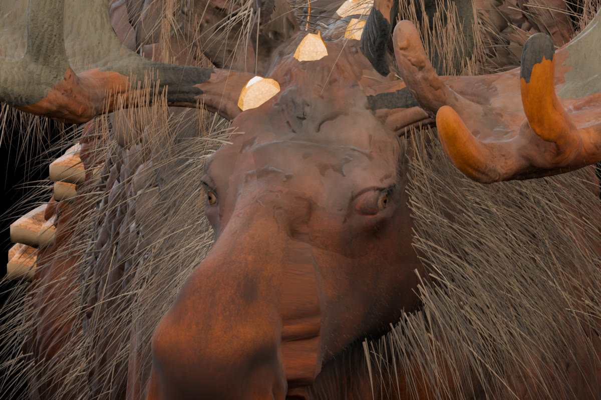
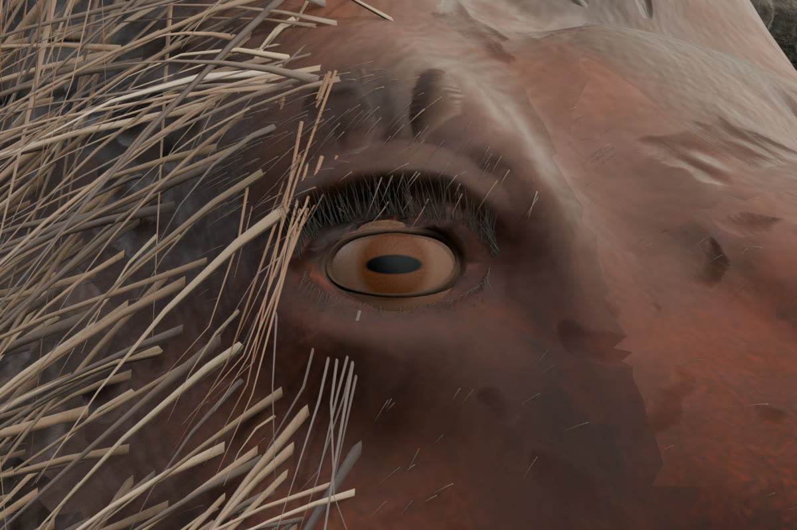
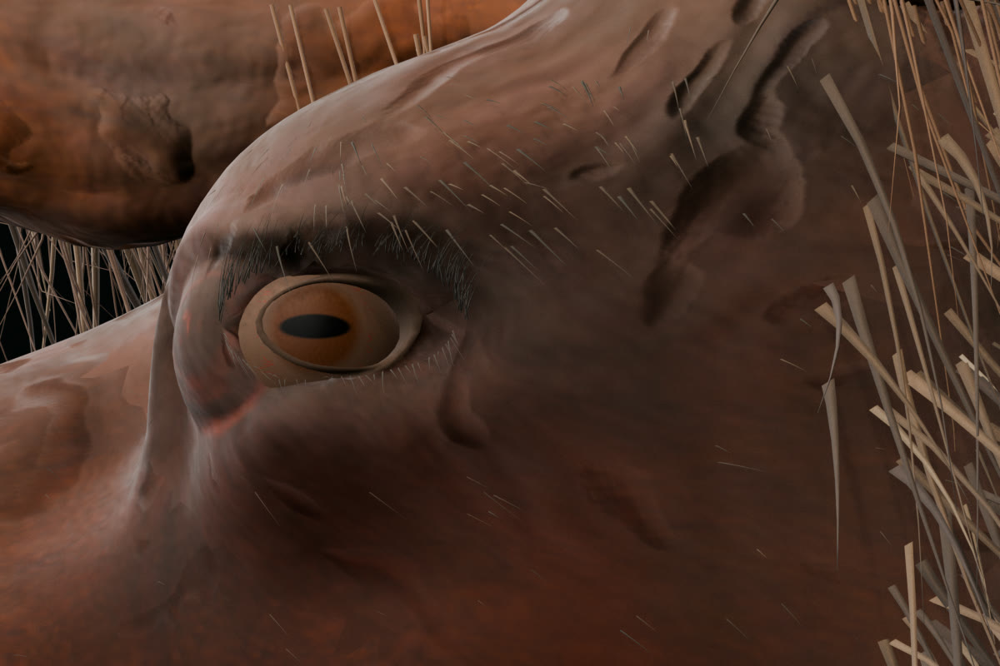

Лось V32U — глазницы больше не открыты
Это рендеры настоящей изменённой модели Blender, не сгенерированный концепт. В V32R оба края глазниц были физически открыты — 37 рёбер слева и 31 справа. В V32U все 68 прежних граничных рёбер получили соединённую с оригинальным мешем внутреннюю поверхность век: четыре ряда геометрии и непрозрачную анатомическую подкладку за сферой глаза.
Глаза теперь посажены глубже (левый на 3,5 мм, правый на 3 мм по локальной X). Переработан слишком зеркальный материал век, из-за которого вокруг глаза появлялась бело-серебряная кайма. Сохранены 4K-материалы и синхронное вращение обоих глаз.
Крупные планы — прямо и влево
Нажми на изображение для просмотра в полном размере. Каждый кадр получен из нового .blend-файла V32U.




Морда спереди

Контроль снизу: внутренняя полость больше не открыта

